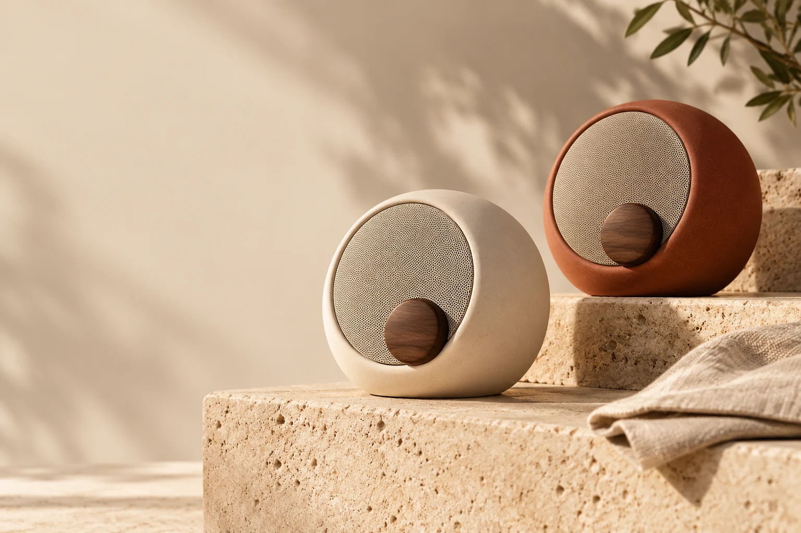

01 / MARINE SERVICES
Asterwake
Oceanic editorial luxury. A proposed guided refit scope builder with transparent, nonbinding estimate assumptions.
VIEW THE VISUAL BOARD TENTATIVE FICTIONAL NAMEOriginal fictional propositions, not client case studies. These boards show high-fidelity design and illustrative module states. Full interactive demos wait for your visual approval.
Oceanic editorial luxury. A proposed guided refit scope builder with transparent, nonbinding estimate assumptions.
VIEW THE VISUAL BOARD TENTATIVE FICTIONAL NAMETechnical confidence. A proposed specification wizard and clearly simulated request-to-review operational workflow.
VIEW THE VISUAL BOARD RECOMMENDED FIRST DIRECTION
Tactile, warm brand design. A proposed set configurator with deterministic fictional sample pricing, no checkout.
VIEW THE VISUAL BOARD TENTATIVE FICTIONAL NAMEIts strongest opportunity is the combination of visual character, input validation and a reviewable operational handoff. It would demonstrate a different capability from the NCNS agency site itself. Asterwake follows for premium service positioning; Auven adds a clear commerce and brand-design contrast. This is a recommendation, not approval to implement.
This is a review-only index. Proposed future routes and implementation scope are in the concept review. Return to the approved NCNS site